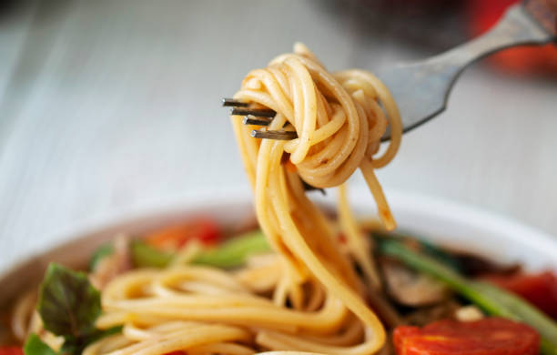

Pasta
Students eat a lot of it
Pasta World Records
Longest Strand of Pasta
The longest strand of pasta measured 3,776 m (12,388 ft 5 in) and was achieved by LAWSON INC. (Japan) at Time 24 Building, Aomi, Koto-ku, Tokyo , Japan, on 20 October 2010. The whole pasta was cooked. Sauce: This world record has been shamelessly taken from Guinness World Records on 17/10/2022
On the subject of Italy
Some do say that Italy isn't real. Sheeple say we are conspiracy theorists, but have you ever seen a real Italian??????
Don't believe what Big Italy wants you to.
Pasta Dictionary
- Al Dente: Translates as "to the tooth" and refers to the ideal tender but firm texture of cooked pasta.
- Aglio e Olio: Garlic and oil, a quick sauce often paired with spaghetti.
- Pesto: Meaning, literally, 'pounded' or 'crushed', this term which is synonymous with a basil-based pasta sauce describes the method used to make it.
- Ebollizione: Bring to a boil.
- more to be added